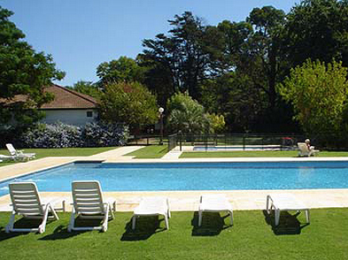
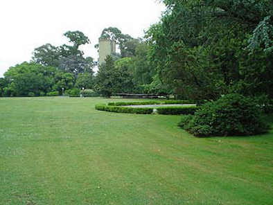
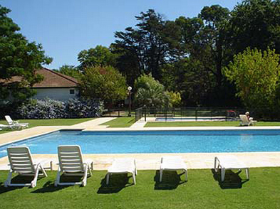
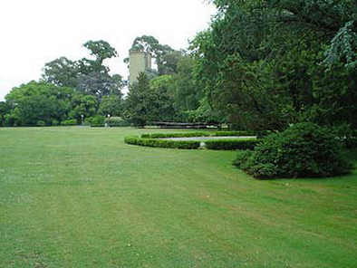

Tel. 0348 4218 777 / cel. 155 037 5046 y 154 411 9393 / email: diegonocampo@gmail.com / odamarty@gmail.com
SAN JORGE VILLAGE
Es un lugar soñado, a 30 km del centro de Buenos Aires y a 15 cuadras de la Panamericana o Acceso Norte, sobre la ruta 197. Son 110 Ha que pertenecieron al Haras de la familia Alzaga. Con árboles centenarios y una parquización increíble hecha por el viejo Tahys. La casa principal, con el típico estilo de la campiña inglesa es hoy el Club House. El desarrollo del SJV, empezó en 1988 y estuvo a cargo del grupo Pérez Companc. Fue uno de los primeros lugares pensados para vivir todo el año, con una infraestructura de servicios excelente, seguridad integral y con el colegio Saint George s dentro del club, sucursal norte del tradicional colegio inglés de Quilmes. En la actualidad, hay 305 familias viviendo, con más de 40 de altos funcionarios de empresas multinacionales.
LA RUTA 197
Acceso desde panamericana por la avenida de triple mano de ida y vuelta, con bulevar y perfectamente iluminada
 



SEGURIDAD INTERNA
El club está rodeado por un muro perimetral, con sistema de detección infrarrojo, cámaras de video y central de monitoreo las 24 hs del día. Hay custodia en las barreras de las 2 entradas del club, rondines permanentes y exhaustivos tanto del perímetro como de las calles internas.
COLEGIO
St Georges College North es un colegio bilingüe de jornada completa para alumnos entre 3 y 18 años. Su programa de estudios está basado en el del Bachillerato Internacional y cumple también con las exigencias del bachillerato argentino. Los alumnos se preparan para rendir los exámenes de IGCSE y el Bachillerato Internacional. Es un colegio laico, con clases de religión optativas. Hay servicios de bus y camionetas al centro y otros countries.Canchas de rugby, atletismo, hockey. Pavillion, laboratorios, salón SUM para representaciones de concerts y próxima pileta cubierta y gimnasio. El hecho de vivir en el San Jorge Village no garantiza un lugar en St George's College North. Para obtener más información sobre el Colegio visitar el sitio: www.stgeorge.com.ar
Deportes
- Club Hípico
- Caballerizas
- Pista de saltos
- Pista cubierta
- Corrales
- Circuito de cross de 6 km con obstáculos y Talud
- Tennis: 10 canchas de polvo de ladrillo iluminadas
- Paddle: 4 canchas iluminadas
- Squash: 2 canchas
- Gimnasio de ultima generación
- Piletas para socios y para chicos
- Deck de madera cubierto, en el sector piletas, ideal para tomar un desayuno, almorzar o tomar algo después de un partido de tennis.
- Cancha de fútbol reglamentaria iluminada
- Driving Range con profesores
- Vestuarios, sauna, guardería, KG rodante para 1 y 2 años
- Colonia de vacaciones y actividades para todos los chicos desde los 3 años
- Club de jóvenes con diferentes actividades y juegos, separados por edades
- Club House :7 hectáreas de jardín central
- Mansión reacondicionada a nuevo, con Salones de lectura, juegos, TV, Living y comedor
- Gimnasio espectacular con máquinas Johnson de última generación, aire acondicionado, música y varios Televisores